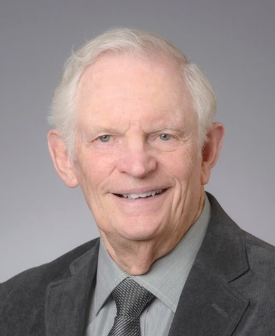

The conical reference frame builds on a line of published work spanning more than two decades.
-
May, D. H., "Conical Coordinates for Elliptical Orbits."
-
May, D. H., "Modeling Orbital Motion in a Circular Conic Reference Frame."
Paper AIAA 2022-1431, AIAA SciTech 2022 Forum, San Diego, CA, January 2022.
-
May, D. H., "Orbital Motion Equations with Dynamic Models."
Paper AAS 05-354, AAS/AIAA Astrodynamics Specialist Conference, Lake Tahoe, CA, August 2005.
-
May, D. H., "Integrated Orbital Motion Equations with Conformance Models."
Paper AIAA-99-4060, AIAA Guidance, Navigation, and Control Conference, Portland, OR, August 1999.

Doug May retired from the U.S. Air Force as a Lieutenant Colonel after 21 years, including two combat tours as an F‑4 pilot. His space career includes the Inertial Upper Stage (IUS) Program Office at Space Systems Division, Los Angeles, and management of Space Shuttle payload integration for DOD payloads at Kennedy Space Center. In industry he was a Senior Engineer/Scientist at ATK Thiokol (now Northrop Grumman), working on Space Shuttle Solid Rocket Motor design and production. He holds a BS in Mechanical Engineering from Washington State University and an MS in Aeronautical Engineering from the Air Force Institute of Technology. He has taught at Florida Institute of Technology, Embry‑Riddle Aeronautical University, and the University of Arizona, where he instructed the Senior Engineering Design (Capstone) course. He is an Associate Fellow of the AIAA and a member of ASME.
HTML coding and site organization were done with the assistance of Claude, an AI model developed by Anthropic. The research, mathematics, and figures are the author's own.